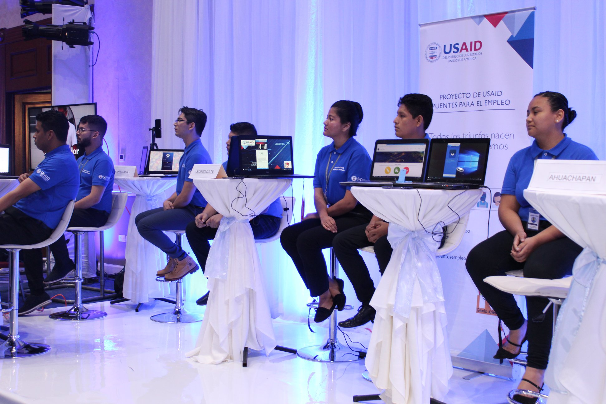
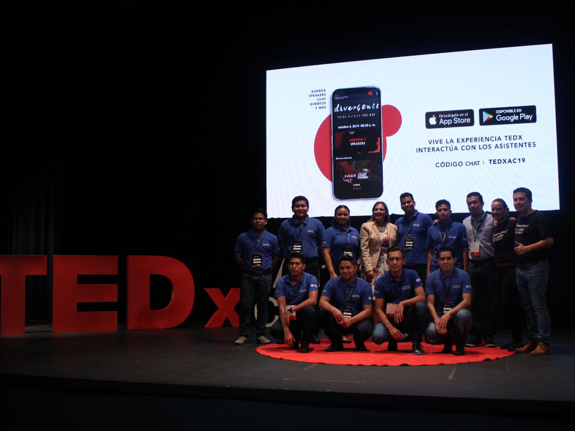

Trabajamos a través de las generaciones en la construcción de una sociedad mas solidaria,
comprometida con el desarrollo
integral de los salvadoreños.

Impulsando la Empleabilidad en el País a través de la capacitación y formación

Fundación Gloria de Kriete y Usaid con el Programa Puentes para el Empleo y
los Centros de Desarrollo de Software buscan
potenciar a jóvenes con ganas de superarse y aprender tecnologías nuevas para que les
sirva de herramientas en el área
profesional.